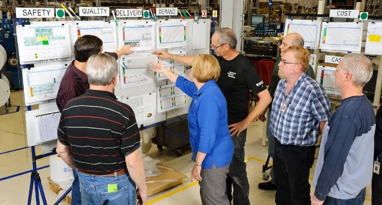

flowchart LR A[Describir el problema <br> con claridad] --> B[Identificar <br> los factores <br> más importantes] B --> C[Proponer <br> o refinar <br> un modelo] C --> D[Recoger <br> datos] D --> B C --> E[Manipular <br> el modelo] E --> F[Confirmar <br> la solución] F --> G[Sacar conclusiones <br> y hacer las recomendaciones]
1 La estadística en el entorno industrial.

1.1 Introducción
La estadística es la ciencia de aprender a partir de los datos. Implica la recolección, análisis y presentación de los datos, y su utilización para tomar decisiones y resolver problemas.
Hay muchos aspectos del trabajo industrial que implican recoger datos, trabajar con ellos y utilizarlos para resolver un problema; el uso de la estadística es sólo una herramienta más, tan importante como cualquier otra disciplina en el bagaje de conocimientos de un científico, ingeniero o técnico industrial.
Los métodos estadísticos nos ayudan a describir y comprender la variabilidad. Cuando hablamos de variabilidad queremos decir que sucesivas observaciones de un mismo proceso o sistema no dan exactamente los mismos resultados. Por ejemplo, el consumo de gasolina de un coche no es siempre igual, sino que varía de manera considerable. Esta variación depende de muchos factores, como la forma de conducir, el tipo de carretera, la situación del propio vehículo (presión de neumáticos, compresión del motor, …), la marca de la gasolina, el octanaje, o incluso las condiciones meteorológicas. Todos estos factores son causas de variabilidad en el consumo de gasolina. La estadística nos permite analizar estos factores y determinar cuáles son los más importantes o tienen mayor impacto en el consumo; una vez conocidos, podemos actuar sobre ellos.
Importante
El objetivo principal de la mejora industrial es la reducción de la variabilidad.
En este libro aprenderemos a utilizar herramientas diversas, tanto estadísticas como de la ciencia de datos, para realizar nuestro análisis. Para aprender de los datos necesitamos más que los simples números; para interpretarlos necesitaremos siempre el conocimiento del proceso industrial que estamos analizando.En un análisis de la producción de un producto lácteo, por ejemplo, los números significan poco sin un conocimiento del proceso; los valores de pH, temperatura o concentración de lactosa influyen en el resultado del proceso de forma diferente. Los datos son números dentro de un contexto, y necesitamos conocer este contexto para dar sentido a los números.
1.2 Método científico y pensamiento estadístico.
Los ingenieros y técnicos resuelven problemas de interés para la empresa y la sociedad mediante la aplicación de los principios del método científico, siguiendo estos pasos:
- Preparar una descripción clara y concisa del problema
- Identificar, al menos de forma tentativa, los principales factores que afectan al problema, o que podrían tener un papel en su resolución
- Proponer un modelo para el problema, usando conocimiento científico o tecnológico del proceso en estudio, dejando constancia de las limitaciones del modelo propuesto.
- Realizar experimentos apropiados y recolectar datos para probar o validar el modelo tentativo o las conclusiones previas obtenidas en los pasos 2 y 3
- Refinar el modelo sobre la base de los datos observados
- Manipular el modelo para desarrollar una solución al problema
- Realizar un experimento adecuado para confirmar que la solución propuesta es efectiva y eficiente.
- Sacar las conclusiones oportunas o hacer recomendaciones basándose en la solución encontrada.
1.3 Los datos industriales
El origen de los datos
En el entorno industrial (Douglas C Montgomery 2011), los datos provienen casi siempre de una de estas tres vías:
- Estudio retrospectivo, basado en datos históricos
- Estudio observacional
- Experimento diseñado
Un buen sistema de recogida de datos facilitará el estudio posterior. Si ponemos poco cuidado en la toma de datos y en la forma de guardarlos, nos encontraremos después con dificultades en la fase de análisis o en la de interpretación; en algunos casos, estas dificultades se convertirán en problemas imposibles de resolver.
Estudios retrospectivos o históricos
Un estudio retrospectivo o histórico es el que utiliza una muestra o todos los datos históricos de un proceso, recogidos en el pasado durante un período determinado de tiempo. El objetivo de un estudio de este tipo puede ser la investigación sobre la relación entre algunas variables, o explorar la calidad de la información disponible, o construir un modelo que permita explicar el proceso tal como es actualmente, o saber si se ha desviado. Estos modelos del proceso se denominan modelos empíricos, porque están basados en los propios datos del proceso y no en una formulación teórica sobre el mismo.
Un estudio retrospectivo tiene la ventaja de tener a su disposición un gran número de datos que ya han sido recogidos, minimizando el esfuerzo de obtenerlos. Sin embargo, tiene varios problemas potenciales:
- Si no disponemos de detalles suficientes, es posible que no podamos determinar si las condiciones de variación de los valores obtenidos responden a las mismas causas que en la situación actual.
- Es posible que nos falte algún valor clave que no haya sido recogido o que lo haya sido de manera defectuosa
- Algunas veces, la fiabilidad y validez de los datos de proceso históricos son dudosas, o al menos, cuestionables.
- Los datos históricos no siempre se han recogido con la perspectiva actual del proceso, y es posible que no nos proporciones explicaciones adecuadas del proceso en su situación actual.
- A veces queremos utilizar los datos históricos de proceso para fines que no estaban previstos cuando se recogieron
- Las notas sobre los valores del proceso, incluyendo los valores anormales, pueden ser insuficientes o inexistentes, y no tenemos ninguna explicación sobre los posibles valores anómalos que detectamos en el análisis.
Usar datos históricos siempre tiene el riesgo de que, por la razón que sea, no se hayan recogido datos importantes, o que estos datos se hayan perdido, o se hayan transcrito de forma inadecuada o incorrecta. Es decir, los datos históricos pueden tener problemas de calidad de datos.
El hecho de que algunos datos se hayan recogido históricamente no siempre quiere decir que estos datos sean relevantes o útiles. Cuando el grado de conocimiento del proceso no es suficiente, o no se basa en un análisis metódico y riguroso de los datos, es posible que no se hayan recogido algunos datos que pueden ser importantes para el proceso, a veces simplemente porque son complejos o difíciles de analizar. Los datos históricos no pueden proporcionar la información que buscamos si la información de las variables clave nunca se ha recogido o se ha hecho sin una buena base experimental.
El propósito del análisis de los datos industriales es aislar las causas que están detrás de los sucesos que afectan e influyen en los procesos. En los datos históricos, estos sucesos pueden haber ocurrido semanas, meses o incluso años antes, sin que haya registros ni notas que hayan intentado explicar estas causas, y los recuerdos de las personas que han participado en ellos se pierden con el tiempo, o se alteran involuntariamente, proporcionando explicaciones supuestamente válidas pero que en realidad son incorrectas. Por eso, con frecuencia, el análisis de los datos históricos puede poner de manifiesto hechos interesantes, pero sus causas quedan sin explicar.
Los estudios históricos pueden requerir una fase previa de preparación y depuración de datos que puede llegar a ser muy larga y tediosa. Se estima que en muchos estudios de ciencia de datos, el tiempo de preparación de los datos puede llegar al \(60\%\) del tiempo total empleado en el estudio. Las herramientas de análisis de datos son de gran ayuda en esta fase del proceso, aunque en muchas ocasiones será necesario un trabajo manual de recolección de datos en papel, hojas de cálculo diversas y otras fuentes. Esta fase es muy útil no sólo para la preparación de datos para el estudio, sino para mejorar el conocimiento de los datos, cómo se originan y cómo se almacenan. Este conocimiento siempre es de gran utilidad para mejorar los procedimientos actuales de captura de datos, facilitando la fiabilidad de los análisis futuros.
Estudios observacionales
Como su nombre indica, un estudio observacional simplemente observa un proceso durante un tiempo de operación en rutina. Normalmente, el ingeniero o técnico interfiere lo mínimo posible en el proceso; sólo lo suficiente para recoger la información que necesita, si piensa que esa información puede ser relevante. En muchas ocasiones, el estudio no forma parte de los controles de rutina, y representa un trabajo adicional.
Si se planifican adecuadamente, los estudios observacionales proporcionan datos fiables, precisos y completos para documentar un proceso. Por otra parte, estos estudios proporcionan una información limitada sobre las relaciones entre las variables del proceso, porque es posible que durante el tiempo limitado de observación, el rango de variación de las variables no recoja todas las situaciones posibles; por ejemplo, las situaciones extraordinarias.
Experimentos diseñados
La tercera forma de recoger información de un proceso son los experimentos diseñados. En un experimento de este tipo, el ingeniero o técnico hace un cambio deliberado en las variables que controla (llamadas factores), observa el resultado, y toma una decisión respecto a qué variable o variables son responsables de los cambios que observa en el proceso.
Una diferencia importante respecto a los estudios históricos y los observacionales es que las diferentes combinaciones de factores se aplican al azar sobre un conjunto de unidades experimentales. Esto permite establecer con precisión las relaciones causa-efecto, cosa que no suele ser posible ni en los estudios históricos ni en los observacionales.
Experimentos diseñados
En el capítulo 11 se hará una introducción básica al diseño de experimentos
1.4 Algunas definiciones importantes
Población y muestra
Una población es un conjunto de de personas, cosas o, en general, objetos en estudio. A veces, una población es demasiado grande para que podamos abarcarla completa; para poder estudiarla, obtenemos una muestra, que consiste en un subconjunto de la población que hemos seleccionado para su estudio. El proceso de obtener una muestra se llama muestreo, y se realiza de acuerdo con normas y procedimientos específicos.
En muchas ocasiones, cuando se recogen los datos como resultado de una experimentación, definimos la población como todos los resultados que podríamos haber obtenido. Llamamos a este conjunto de posibles resultados una población conceptual. Por ejemplo, cuando medimos el \(pH\) de varias muestras de leche, la población es el conjunto de todos los resultados posibles que podríamos haber tenido. Muchos problemas de ingeniería y tecnología se refieren a poblaciones conceptuales.
Recuerda
En la mayoría de las ocasiones, nuestros datos provienen de una muestra obtenida de una población,
Cuando tomamos una muestra, debemos estar seguros de que contiene las propiedades que queremos estudiar en la población. En ese caso, decimos que la muestra es representativa: los individuos de la muestra son representativos de la población. Para que la muestra sea representativa, debe ser obtenida mediante un muestreo aleatorio. Una muestra aleatoria simple de tamaño \(n\) consiste en \(n\) individuos de una población, elegidos de forma que cada conjunto posible de \(n\) individuos tiene la misma probabilidad de ser elegido.
¿Qué es la probabilidad?
El concepto de probabilidad se explica en el capítulo 6
Parámetro y estadístico
Un parámetro es una característica de una población. Podemos estimar su valor mediante la extracción de una muestra, que utilizaremos para calcular un estadístico muestral. Llamamos estadístico a un número que representa una propiedad o característica de la muestra, y constituye una estimación del valor de un parámetro de la población que estamos estudiando.
Variables y casos
A los objetos descritos en un conjunto de datos los llamamos casos, de forma genérica. A veces, estos casos pueden corresponder a personas; en ese caso podemos llamarlos individuos. Cuando los objetos que estudiamos no son personas, como es lo habitual en el entorno industrial, utilizamos la nomenclatura genérica.
Un atributo es una característica que define una propiedad de un objeto, persona o cosa. Por ejemplo, edad, peso, altura, sexo, color de ojos, son atributos de una persona. Llamamos variable a una característica cualquiera de un individuo que puede ser medida. Una variable puede tomar diferentes valores en diferentes individuos o casos.
Según estas definiciones que acabamos de ver, una muestra está formada por un conjunto de casos, y cada caso contiene un determinado número de variables, que contienen los valores que hemos analizado o medido.
Tipos de variables
Algunas variables, como el color, sirven para clasificar los individuos en categorías. Otras, como la altura o el peso de un individuo, pueden tomar valores numéricos con los que podemos hacer cálculos. Por ejemplo, podemos sumar la altura de varias personas, pero no tiene sentido sumar los colores del arco-iris (aunque sí podemos contarlos, y hacer cálculos con estos recuentos). También podemos categorizar variables continuas: podemos clasificar nuestro grupo de personas en altas o bajas, y podemos contar cuántas personas entran en cada categoría.
| Variables cualitativas o categóricas |
Variables cuantitativas o métricas |
||
|---|---|---|---|
| Nominales | Ordinales | Discretas | Continuas |
| Valores en categorías arbitrarias | Valores en categorías ordenadas | Valores enteros en escala numérica | Valores continuos en escala numérica |
| (sin unidades) | (sin unidades) | Unidades contadas | Unidades medidas |
Una variable categórica coloca a un individuo en uno o más grupos o categorías
Una variable métrica toma valores numéricos con los que tiene sentido realizar cálculos aritméticos como sumar, restar, etc.
Las variables categóricas se conocen también como variables cualitativas porque indican cualidades.
Las variables métricas se conocen también como variables cuantitativas porque indican cantidades.
Comentario: ¿Cualitativo quiere decir “que tiene calidad”?
A veces se utiliza la palabra cualitativo de forma incorrecta para indicar calidad, por ejemplo cuando alguien dice: “Este envase es muy cualitativo”. Deberíamos decir “Este envase tiene gran calidad”. Cualitativo no se deriva de calidad, sino de cualidad.
Reglas básicas para establecer los nombres de las variables.
Según hemos visto, existen diferentes tipos de variables, cualitativas (categóricas) y cuantitativas (métricas). Normalmente, los valores de las variables categóricas se describen mediante textos del tipo “color blanco”, “hombre”, “mujer”, “alto”, “bajo”, etc. Suelen corresponder con características descriptivas, y por lo tanto, no puede hacerse cálculos directamente con ellos, a menos que se hayan resumido, por ejemplo, mediante un conteo. Las variables métricas consisten en valores numéricos, que pueden ser enteros o continuos, y pueden utilizarse directamente para hacer cálculos tales como sumas, etc.
A partir de aquí utilizaremos una nomenclatura compatible con las hojas de cálculo en formato europeo para escribir los números; usaremos la coma para la separación decimal y el punto y coma para la separación de los números cuando los escribamos de forma seriada.
Una variable está descrita siempre por un nombre, que designa la variable, y un valor o conjunto de valores, que corresponden a los casos. Este conjunto de valores, como acabamos de ver, pueden ser textos o números.
Existen también otros tipos de variables que veremos más tarde, como variables lógicas o fechas, según el tipo de dato que almacenemos en esa variable.
Ejemplos de valores de texto: “Carlos”, “fruta”, “Lluvia fuerte”, “muy ácido”, “sabor a fresa”
Ejemplos de valores numéricos: \(1\); \(7\); \(10,65\)
Siempre que sea posible, utilizaremos el nombre del atributo o característica que estamos midiendo o analizando, o su abreviatura, para designar una variable; por ejemplo, si estamos recogiendo la altura de una serie de personas, llamaremos altura a la variable; si estamos recogiendo el peso, usaremos el nombre peso, etc.
A veces, asignar un nombre a una variable no es todo lo fácil que podría parecer a simple vista. Por ejemplo, ¿qué nombre daríamos a una variable que va a recoger los valores de \(pH\) de la leche en una cuba de queso en el momento de añadir el cuajo? Está claro que \(pH\) no es suficiente, porque en el proceso hay varias medidas de \(pH\) y sería bueno que pudiésemos diferenciarlas con facilidad. En un caso como éste, es probable que necesitemos utilizar varias palabras o abreviaturas que describan mejor el nombre de la variable.
Para la construcción correcta de estos nombres, se han establecido un conjunto de reglas, con el objetivo de evitar errores y facilitar el intercambio de los datos entre diferentes programas de análisis. Son éstas:
Un nombre válido consiste en una combinación de letras, números y signo de subrayado (\(\_\))
Un nombre de variable no puede empezar por un número, un punto o un signo de subrayado (\(\_\)); debe empezar siempre por una letra.
Los nombres de variables irán siempre en minúsculas. Según esta regla, \(Peso\) no es un nombre válido, pero \(peso\) si lo es.
No utilizaremos espacios en blanco, acentos ni caracteres especiales como \(\tilde{n}\), \(\%\), guiones o paréntesis.
Hay veces en que nos interesa unir varias palabras para construir un nombre de variable. Se utilizan diferentes formas de unir palabras, por ejemplo:
un punto, como en \(peso.en.cm\),
lo que se ha llamado escritura de camello (camelCase), que se llama así por el uso de mayúsculas y minúsculas mezcladas (\(PesoEnCm\))
el signo de subrayado \(\_\), como en \(peso\_en\_cm\)
Algunas de estas opciones son utilizadas en distintas comunidades de usuarios, por ejemplo la opción 1 es utilizada en la guía de estilo de Google, y la opción 2 es muy utilizada por los programadores del entorno de los lenguajes de Microsoft. Nosotros utilizaremos el signo de subrayado (\(\_\)), que es la forma más usada en el entorno de programación de R.
Siempre se separarán las palabras mediante el signo de subrayado (_) para facilitar la lectura. Así, aunque \(temperatura1\) es un nombre válido, preferiremos \(temp\_1\); es más corto y de lectura más clara. Igualmente, preferiremos \(peso\_empaquetado\) a \(pesoempaquetado\)
Mantendremos los nombres razonablemente cortos para facilitar la lectura. Aunque podemos hacer los nombres todo lo largos que queramos, es más cómodo utilizar nombres cortos. Por ejemplo, podríamos utilizar \(temperatura\_de\_la\_leche\_al\_cuajar\), pero preferiremos abreviarlo como \(temp\_cuajo\).
Nombres no válidos:
- \(peso\ en\ gramos\) (contiene espacios)
- \(pH\_de\_la\_leche\_en\_Recepci\acute{o}n\) (demasiado largo, tiene un acento, tiene mayúsculas)
- \(extracto\_seco\_total\_a\_la\_salida\_de\_la\_salmuera\) (demasiado largo)
Alternativas válidas:
- \(peso\_g\)
- \(pH\_leche\_rec\) (en este caso, de manera excepcional, podemos mantener el uso de la mayúscula por corrección formal)
- \(est\_salida\_sal\)
Un caso particular es el uso de la \(\tilde{n}\), ya que no hay una alternativa fácil para el uso en las fechas (\(a\tilde{n}o\)). R admite el uso de la \(\tilde{n}\) en los nombres de variables, por lo que podremos usarlo con cuidado, poniendo atención a los posibles errores que se pudiesen producir en algunas librerías.